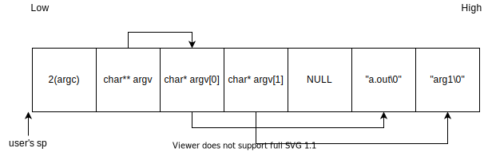

Lab 5: Thread and User Process#
Introduction#
Multitasking is the most important feature of an operating system. In this lab, you’ll learn how to create threads and how to switch between different threads to achieve multitasking. Moreover, you’ll learn how a user program becomes a user process and accesses services provided by the kernel through system calls.
Goals of this lab#
Understand how to create threads and user processes.
Understand how to implement scheduler and context switch.
Understand what’s preemption.
Understand how to implement the waiting mechanism.
Understand how to implement POSIX signals.
Background#
Threads#
In the previous lab, you already learned how to implement multitasking with a single stack. However, in the case of single stack multitasking, the CPU thread can’t switch between two tasks at any time. Otherwise, a task may corrupt another task’s context stored on the stack.
As you know that the context of a CPU thread is determined by the values of its register set. Therefore, we can create different copies of register sets stored in the memory to represent different threads. When we want a CPU thread to run a specific thread, we let the CPU thread loads the corresponding register set in the memory to its registers. Then, from a macro point of view, there are multiple CPU threads running tasks independently at the same time. Moreover, these register sets can be loaded by any other CPU thread to achieve true parallelism.
Note
In this documentation, a thread means a software thread. For processing elements containing their hardware register sets are called CPU threads.
User Process#
When a user wants to run an application, the operating system loads the user program into memory and runs it with one or multiple threads. However, users want to run multiple programs or multiple copies of the same program. Moreover, they want each executing program to be isolated and has its identity, capabilities, and resource. To achieve this, the operating system maintains multiple isolated execution instances called processes. A process can only access the resource it owns. If it needs additional resources, it invokes the corresponding system calls. The kernel then checks the capabilities of the process and only provides the resource if the process has the access right.
MMU-less#
In general, programs that directly run machine code on the CPU are isolated by virtual memory. However, we don’t enable the MMU in this lab, so we can’t prevent illegal memory access and we can’t use the same virtual address for different processes. If you want to execute multiple programs, please use different linker scripts for different programs and load them to different addresses to prevent overlapping.
Run Queue and Wait Queue#
One CPU thread can run one thread at a time, but there may be multiple runnable threads at the same time. Those runnable threads are put in the run queue. When the current thread relinquishes control of the CPU thread, it calls the scheduler to pick the next thread. Then, a piece of code saves the CPU thread’s register set and loads the next thread’s register set.
During a thread’s execution, it may need to wait for a certain resource(e.g. a locked mutex or a non-ready IO device). Instead of busy waiting, a more efficient way is to yield the CPU thread so other threads can do meaningful jobs. Yet, yielding CPU is not enough because the thread may be scheduled again and waste CPU time. Therefore, when a thread needs to wait for a long time, it removes itself from the run queue, puts itself in a wait queue, and waits for others to wake it up.
In general, each resource has its own wait queue. When the resource is ready, one or many waiting threads in the wait queue will be put back to the run queue. The awakened thread is eventually scheduled and runs. Then, it can get the resource if the resource is still available.
Yield and Preemption#
As mentioned above, a thread can voluntarily yield the CPU thread to others. Yet, we can’t rely on a voluntary yield, because once a thread never yields, a high-priority thread can’t run even when it’s runnable. Hence, the kernel should be able to force the current thread to yield the CPU thread(i.e. preemption).
The implementation of preemption is simple. Once a thread relinquishes control of the CPU thread during its execution, there is a chance for another piece of code to call the scheduler and switch to another thread. For example, when a thread in kernel mode is interrupted, the control is handed over to the interrupt handler. Before returning to the original execution, the kernel can call the scheduler to do a context switch to achieve kernel preemption. When a user process takes exceptions(system calls, interrupts, etc.), the control is handed over to the exception handler. Before returning to the original execution, the kernel can call the scheduler to do a context switch to achieve user preemption.
The tricky part of preemption is the protection of critical sections because code executions are arbitrally interleaving now. Fortunately, user programs protect their critical sections themselves. Even the user program doesn’t protect the critical sections well, it’s the user program’s developer’s fault, and no one will blame the operating system. Also, it’s not possible to break other isolated processes. Therefore, the kernel developers don’t need to worry about problems caused by enabling user preemption.
On the contrary, there are multiple shared resources in the kernel. Meanwhile, a data race in the kernel can break the entire system. If the kernel’s developers need to enable fine-grained preemption in kernel mode, They need to be aware of all possible shared resource accesses and adopt the right methods to protect them, hence it’s more complex to enable kernel preemption.
Basic Exercises#
Basic Exercise 1 - Thread#
In this part, you need to implement the creation, switch, and recycling of threads.
Creating a Thread#
Implement a thread-creating API. Users can pass a function(task) to the API, and the function is run in a newly created thread. To make the thread schedulable and runnable, you should create a data structure and a stack for it. Then, put it into the run queue.
The example API is listed below.
def foo():
pass
t = Thread(foo)
Scheduler and Context Switch#
Implement the schedule() API.
When the current thread calls this API, the scheduler picks the next thread from the run queue.
In this lab, your scheduler should at least be able to schedule the threads of the same priority in a round-robin manner.
After the next thread is picked, the kernel can save the current thread’s register set and load the next thread’s.
.global switch_to
switch_to:
stp x19, x20, [x0, 16 * 0]
stp x21, x22, [x0, 16 * 1]
stp x23, x24, [x0, 16 * 2]
stp x25, x26, [x0, 16 * 3]
stp x27, x28, [x0, 16 * 4]
stp fp, lr, [x0, 16 * 5]
mov x9, sp
str x9, [x0, 16 * 6]
ldp x19, x20, [x1, 16 * 0]
ldp x21, x22, [x1, 16 * 1]
ldp x23, x24, [x1, 16 * 2]
ldp x25, x26, [x1, 16 * 3]
ldp x27, x28, [x1, 16 * 4]
ldp fp, lr, [x1, 16 * 5]
ldr x9, [x1, 16 * 6]
mov sp, x9
msr tpidr_el1, x1
ret
.global get_current
get_current:
mrs x0, tpidr_el1
ret
The above example gets the current thread’s data structure from the system register tpidr_el1.
Then it passes the current thread and the next thread to the switch_to(prev, next) function.
Next, the CPU thread’s register set is saved on the current thread’s data structure,
and the next thread’s register set is loaded.
After switching the stack pointer and the tpidr_el1 register, the CPU thread is in the context of the next thread.
Note
You only need to save callee-saved registers, because other registers are already on the stack.
The Idle Thread#
The idle thread is a thread that is always runnable. When there are no other runnable threads, the scheduler should pick it to guarantee that the CPU thread always can fetch and execute the next instruction.
End of a Thread#
When a thread finishes its jobs, it needs to explicitly or implicitly call(return and let the caller call) exit()
to indicate it’s terminated.
In general, the thread can’t recycle all its resources. It’s because memory deallocation is a function call, and a thread shouldn’t free its stack while still using it. Therefore, the finished thread only removes itself from the run queue, releases freeable resources, sets its state to be dead, and waits for someone to recycle the remaining stuff.
In UNIX-like operating systems, the recycler is another thread that creates the zombie thread(parent). The parent can also get the status code from the zombie child’s data structure as useful information. In this lab, you can let the idle thread do the jobs to simplify the implementation. When the idle thread is scheduled, it checks if there is any zombie thread. If yes, it recycles them as follows.
def idle():
while True:
kill_zombies() # reclaim threads marked as DEAD
schedule() # switch to any other runnable thread
Test#
Please test your implementation with the following code or equivalent logic code in the demo.
Expected result: multiple threads print the content interleaved.
void foo(){
for(int i = 0; i < 10; ++i) {
printf("Thread id: %d %d\n", current_thread().id(), i);
delay(1000000);
schedule();
}
}
void kernel_main() {
// ...
// boot setup
// ...
for(int i = 0; i < N; ++i) { // N should > 2
thread_create(foo);
}
idle();
}
Todo
Implement the thread mechanism.
Basic Exercise 2 - User Process and System Call#
In this part, you need to implement the basic user process mechanism such as system calls and user preemption.
Arguments Passing#
In the previous lab, your kernel could already load a user program and get system calls from it. In this lab, you need to add the arguments passing into the program loader, so you can create a process with different arguments.
As shown in the above image, you can put the strings, pointers to the strings, and the number of arguments on the user stack’s top. Meanwhile, set the user’s stack pointer to the corresponding address, so a user program can find the passed arguments.
After that, you can create multiple threads with different arguments to run multiple user processes.
def init():
exec("init", ["init", "arg1"] )
init_thread = Thread(init)
Warning
Be aware of the alignment problem when setting the user stack, unaligned access on rpi3 will cause an exception.
System Calls#
In the previous lab, your user program could already trap to the kernel by the svc instruction.
In this lab, you need to know how the arguments and return value is passed across the user mode and the kernel mode.
Also, you need to implement some basic system calls so you can write simple user programs.
Trap Frame#
When a user process takes an exception and enters kernel mode, the registers are saved at the kernel stack’s top. Before returning to the user mode, the registers are loaded. The saved content is called the trap frame.
In regular exception handling(e.g. page fault, interrupt), the kernel won’t touch the trap frame, so the user process won’t notice that it entered the kernel mode. However, in the case of system calls, the user program expects that the kernel does something for it.
As regular function calls, the program sets the arguments and gets the return value by accessing the general-purpose registers. Then, the kernel can read the trap frame to get the user’s arguments and write the trap frame to set the return value and the error code.
Required System Calls#
You need to implement the following system calls for user programs.
- int getpid()
Get current process’s id.
- size_t uart_read(char buf[], size_t size)
Read size byte to user-provided buffer buf and return the how many bytes read.
- size_t uart_write(const char buf[], size_t size)
Write size byte from user-provided buffer buf and return the how many bytes written.
- int exec(const char* name, char *const argv[])
Execute the program with arguments.
- void exit()
Terminate the current process.
In addition, fork() is the classic way of UNIX-like operating systems to duplicate the current process.
You also need to implement it so a process can create another process.
After invoking fork(), two processes are executing the same code.
To distinguish them, please set the return value of the parent process to the child’s id and set the child process’s return value to 0.
Note that, we don’t enable the MMU, so the two processes are more like two threads now. Please duplicate the content of the parent stack to the child’s and don’t use global variables.
User Preemption#
To implement user preemption, at the end of EL0 to EL1 exception handling,
the kernel should check if the current thread should be switched out(e.g. its time slice is used up).
If yes, call the schedule() to switch to the next thread.
Test#
Please test your implementation with the following code or equivalent logic code in the demo.
Expected result:
argv_test prints the arguments,
fork_test’s pid should be the same as argv_test,
fork_test’s parent should print correct child pid,
fork_test’s child should start execution at the correct location.
All processes should exit properly.
argv_test.c
int main(int argc, char **argv) {
printf("Argv Test, pid %d\n", getpid());
for (int i = 0; i < argc; ++i) {
puts(argv[i]);
}
char *fork_argv[] = {"fork_test", 0};
exec("fork_test", fork_argv);
}
fork_test.c
int main(void) {
printf("Fork Test, pid %d\n", getpid());
int cnt = 1;
int ret = 0;
if ((ret = fork()) == 0) { // child
printf("pid: %d, cnt: %d, ptr: %p\n", getpid(), cnt, &cnt);
++cnt;
fork();
while (cnt < 5) {
printf("pid: %d, cnt: %d, ptr: %p\n", getpid(), cnt, &cnt);
delay(1000000);
++cnt;
}
} else {
printf("parent here, pid %d, child %d\n", getpid(), ret);
}
}
kernel code
void user_test(){
char* argv[] = {"argv_test", "-o", "arg2", 0};
exec("argv_test", argv);
}
void kernel_main() {
// ...
// boot setup
// ...
thread_create(user_test);
idle();
}
Todo
Implement related mechanisms of the user process.
Advanced Exercises#
Advanced Exercise 1 - Wait Queue#
Implement the APIs as below example pseudocode, so each resource can declare its wait queue. Also, a thread can suspend itself and wait until the resource is ready.
wait_queue = WaitQueue()
def block_read():
while nonblock_read() == Again:
wait_queue.wait()
def handler():
# ...
wait_queue.wake_up()
Besides, use the wait queue APIs to implement sleep() and blocking API of uart_read().
The current thread suspends itself and waits for the events to wake it up.
Todo
Implement sleep() and uart_read() by wait queues.
Advanced Exercise 2 - Kernel Preemption#
To implement kernel preemption, at the end of EL1 interrupt handling,
the kernel should check if the current thread should be switched out(e.g. its time slice is used up).
If yes, call the schedule() to switch to the next thread.
Note that, you are only allowed to disable preemption or interrupts when it’s necessary. At other moments, your kernel should always be preemptible.
Todo
Implement kernel preemption.
Advanced Exercise 3 - POSIX Signal#
POSIX signal is an asynchronous inter-process communication mechanism. A user process runs a default or registered signal handler when it receives a signal like the interrupt handling.
You need to implement the kill(pid, signal) system call, so a process sends signals to any process.
Meanwhile, you need to implement the default signal handler for SIGINT and SIGKILL(terminate the process).
Next, You need to implement the signal(signal, handler) system call, so a user program can register its function as the signal’s handler.
Implementation#
One possible implementation is that the kernel checks if there is any pending signal before the process returns to the user mode. If yes, the kernel runs the corresponding handler.
The default signal handlers can be finished in kernel mode. On the contrary, the registered signal handlers should be run in the user mode. Furthermore, the user process may enter the kernel mode again due to another system call or interrupt while running the handler. Therefore, you should save the original context before executing the handler. After the handler finishes, the kernel restores the context to continue the original execution.
After the handler finishes and returns, it’s still in the user mode.
To make it enter the kernel mode and indicates that it has already finished,
the kernel can set the handler’s return address(lr) to a piece of code containing the sigreturn() system call.
Then after executing it, the kernel knows that the handler is done and restores the previous context.
Lastly, the handler needs a user stack during its execution.
The kernel should allocate another stack for the handler and recycle it after the handler finishes.
The kernel can also put the process’s previous user context and sigreturn() on it.
Note
You don’t need to handle the case of nested registered signal handlers.
Todo
Implement POSIX signal.